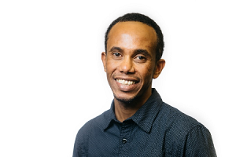

Adresse: Wagnerstrasse 21, 3007 Bern
Telefon: +41 77 960 22 33
E-Mail: dgeo209@gmail.com
Geburtsdatum: 24.12.1981
Familienstand: ledig
Aufenthaltsstatus: Aufenthaltsbewilligung B
Nationalität: Eritreer
Github Profile https://github.com/DGEs2018

| 11.2018 - Präsent | PowersCoders Coding Academy for Refugees Grundlagen & Einstieg zur Webseite-Technologien (HTML, CSS, JavaScript) |
| 09.2014 - 06.2017 | Masterabschluss in Erdwissenschaften, Universität Bern, Schweiz Schwerpunkt: Umwelt- und Rohstoffgeochemie (ERG) Titel der Masterarbeit: Origin and fate of acidic surface waters: a case study from the Engadin Valley |
| 08.2012 – 09.2014 | Deutschkurse beim Lernpunkt und an der VHS Bern |
| 09.1999 – 10.2003 | Bachelorabschluss in Geologie, University of Asmara
Metamorphic mapping of Adi-Abeito Area |
| Text-Editoren (Atom, Sublime),Git, VCS, IDE (Webstorm) | Grundkenntnisse |
| MS-Office-Paket | Gute Kenntnisse |
| Fachspezifische Softwares-GIS-Desktop | Gute Kenntnisse |
| GEONIS(Expert & Wasser) | Gute Kenntnisse |
| XML | Basis Kenntnisse |
| MapInfo | Gute Kenntnisse |
| Move | Grundkenntnisse |
| Phreeqc, HighScore Plus | Gute Kenntnisse |
| R- und Python Programmiersprache | Grundkenntnisse |
| Grafische Software - Adobe Photoshop | Grundkenntnisse |
| 08.2018 - 10.2018 | Arbeitsuchend |
| 03.2018 - 07.2018 | Praktikant bei GEOCOM Informatik AG, Burgdorf, Schweiz GIS-Desktop Vertiefung & fundierte Grundkenntnisse der GEONIS Fachschalen, Mithilfe abteilungsübergreifender Datenaufbereitung bzw.beim Kundenproblemen im Support |
| 10.2003 – 12.2010 | Geologe bei Ministry of Energy and Mines, Department of Mines, Asmara, Eritrea |
| (Ergänzende Angaben - als entsandter Mitarbeiter vom Department of Mines) | |
| 05.2010 – 12.2010, 11.2009 – 04.2010 | Geologe bei Chalice Gold Ltd., Zara Projekt, Eritrea |
| 11.2009 – 11.2009 | Geologe bei London Africa Ltd., Melih Prospekt, Eritrea |
| 02.2009 - 06.2009,
08.2006 - 12.2006, 08.2005 - 12.2005 |
Geologe bei Sunridge Gold Corp., Asmara Projekt, Eritrea |
| 05.2007 - 12.2007 | Geologe bei Sub-sahara Resources NL., Zara Projekt, Zara, Eritrea |
| 03.2005 - 06.2005 | Geologe bei Sanu Resources Ltd., Mogoraib Projekt, Mogoraib, Eritrea |
| 03.2004 - 07.2004,10.2003 - 12.2003 |
Tigrigna + Amharisch Muttersprache
Deutsch/ Schweizerdeutsch B2/C1
Französisch B2
Englisch C1
Italienisch B1
07.2017 – 01.2018 : Arbeitsuchend
2016 : Gelegentliche Einsätze als Aushilfskraft u.a. im Restaurant
Sprachenverbesserungen
Online-Programmiersprachenlernen
Tigrigna-Deutsch Übersetzer
Gelegentliche Einsätze als Tigrigna-Deutsch Übersetzer